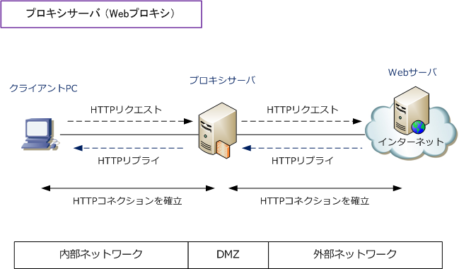
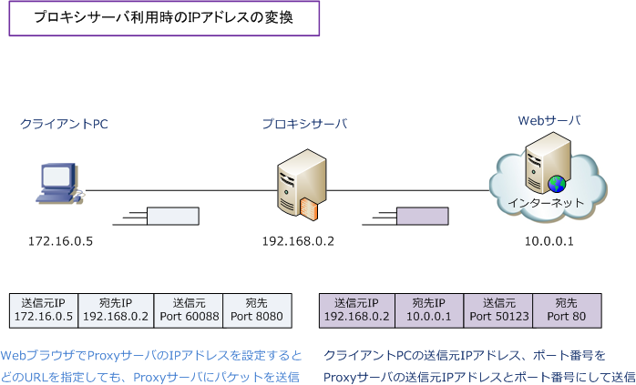
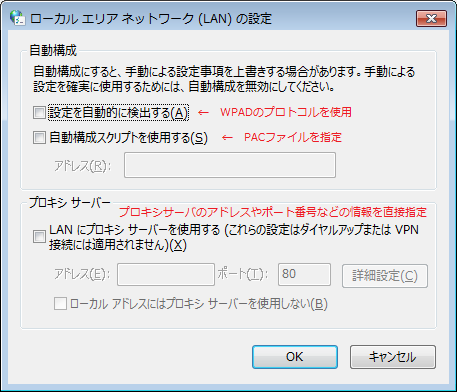

Proxy Server
プロキシサーバとは
プロキシサーバとは、インターネット接続をできない（させない）内部ネットワークのクライアントPCの 代理としてインターネット接続を行うサーバのことです。プロキシサーバは、企業の内部ネットワークと インターネットの境界に配置されます。プロキシサーバには色々な種類がありますが、一般的にプロキシ サーバといえば、HTTPトラフィックを対象としたWebプロキシ（HTTPプロキシ）を指します。

| トラフィックの場所 | プロキシサーバの役割 |
|---|---|
| クライアントPC ⇔ プロキシサーバ | クライアントPCに対してWebサーバの働きをする |
| プロキシサーバ ⇔ Webサーバ | Webサーバに対してクライアントPCの働きをする |
上図の通り、クライアントPCはプロキシサーバとHTTPコネクションを確立させます。次にプロキシサーバと WebサーバがHTTPコネクションを確立させます。ここでいうプロキシサーバはWebプロキシである事が前提。 WebサーバではクライアントPCのIPアドレスは隠蔽されプロキシサーバのIPアドレスが送信元として見えます。

プロキシサーバ導入のメリット
1. キャッシング プロキシサーバはキャッシュ機能を実装させています。以前にWebサーバから受信したWebページの情報を プロキシサーバ自身のHDDなどに一時的にキャッシュすることができます。これによりクライアントPCから HTTPリクエストをプロキシサーバに送信した時にそのキャッシュ情報があれば、キャッシュ情報をすばやく 送り返すのでWeb通信の高速化を実現させます。Webブラウザにもキャッシュ機能はありますが、プロキシ の場合では規模が異なります。また、プロキシサーバの場合プロキシの全利用者のキャッシュを保持できます。
2. ユーザの認証 プロキシサーバにユーザ認証を実装すると、認証されたユーザだけがインターネット通信が可能になります。
3. ユーザの一元管理 内部から外部ネットワークに出ていくHTTPトラフィックを一元管理してユーザ通信を把握する事ができます。
4. URLフィルタリング プロキシサーバでは、特定のURLをアクセス禁止に設定することができます。これにより、特定の不適切な Webサイトの閲覧を禁止することができます。また、受信コンテンツのウィルスチェックをすることも可能。
5. 匿名性の確保 プロキシサーバを導入することで、WebサーバにはクライアントPCではなくプロキシサーバがアクセスする ことになるので、WebサーバにはクライアントPCの固有情報（ IPアドレス、OS、Webブラウザ ）が漏れる ことなくWebサーバを閲覧できます。※ ただし、使用しているプロキシサーバの固有情報は伝わります。
プロキシサーバ - クライアント側のWebブラウザの設定
Webブラウザ側のプロキシサーバの設定には、以下の3つの方法があります。
1. WPAD（Web Proxy Auto-Discovery Protocol）を使用する方法 2. PACファイルを指定する方法 3. 手動設定：プロキシサーバのアドレスやポート番号などの情報を指定する方法

WPADを使用する場合は「設定を自動的に検出する(A)」にチェックボックスにチェックを入れるだけです。 PACファイルを指定する場合には「自動構成スクリプトを使用する(S)」のチェックボックスにチェックを 入れて、PACファイルが存在するURL情報を入力します。手動設定の場合は、プロキシサーバのアドレスや ポート番号などの情報を直接指定します。
※ PACファイルの指定とWPADプロトコルの使用の違いの記事もご参考頂ければ幸いです。